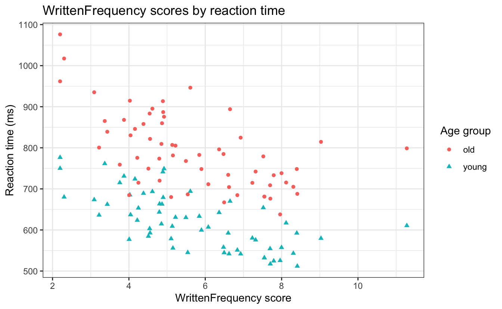

library(tidyverse)
library(patchwork)
library(ggthemes)
library(languageR)5 Datenvisualisierung 2
Visualisierung von Beziehungen
Lesungen
Die Pflichtlektüre zur Vorbereitung auf dieses Thema ist Kap. 2 (Datenvisualisierung) aus Abschnitt 2.5 in Wickham et al. (2023).
Eine ergänzende Lektüre ist Ch. 3 (Data visualtion) in Nordmann & DeBruine (2022).
Wiederholung
Letzte Woche haben wir gelernt…
- wie man Daten mit dem Paket
dplyraus demtidyverseverarbeitet - gelernt, wie man die
pipe(|>) verwendet, um das Ergebnis einer Funktion in eine andere Funktion einzuspeisen - über Funktionen, die auf Zeilen operieren
filter(),arrange()
- über Funktionen, die auf Spalten operieren
rename(),mutate(),select(),relocate()
- wie man
dplyr-Funktionen mit Plots vonggplot2kombiniert
Lernziele
Heute werden wir lernen…
- wie man zwei oder mehr Variablen darstellt
- mit Ästhetik und mit Facettenrastern
- wie man Codechunk-Optionen verwendet
- wie man Plots als Dateien speichert
Lesungen
Die Pflichtlektüre zur Vorbereitung auf dieses Thema ist Kap. 2 (Datenvisualisierung) aus Abschnitt 2.5 in Wickham et al. (2023).
Eine ergänzende Lektüre ist Ch. 3 (Data visualtion) in Nordmann & DeBruine (2022).
Set-up
Packages
tidyverseFamilie von Paketenggplot2für Diagrammedplyrfür die Datenverarbeitung
ggthemesfür farbenblindenfreundliche Farbpalettenpatchworkfür Plot-LayoutslanguageRfür linguistische Datensätze
ggplot theme
Ich habe mein bevorzugtes ggplot-Thema global festgelegt. Das bedeutet, dass nach dem Ausführen dieses Codes alle Diagramme dieses Thema verwenden werden.
theme_set(theme_bw())Data
Wir verwenden den english-Datensatz aus dem Baayen & Shafaei-Bajestan (2019).
- enthält Daten aus einer lexikalischen Entscheidungsaufgabe in Englisch
- Die logarithmisch transformierten Reaktionszeiten werden zurücktransformiert, so dass sie in Millisekunden angegeben werden.
- Wir verwenden dazu die Funktion
exp().
- Wir verwenden dazu die Funktion
df_english <-
english |>
mutate(RTlexdec = exp(RTlexdec),
RTnaming = exp(RTnaming))english dataset
Unsere Variablen von Interesse sind:
| variable | description | type |
|---|---|---|
| RTlexdec | Reaktionszeiten für eine visuelle lexikalische Entscheidung (Millisekunden) | kontinuierlich |
| RTnaming | Reaktionszeiten für den Beginn einer verbalen Wortbenennungsaufgabe (Millisekunden) | kontinuierlich |
| WrittenFrequency | numerischer Vektor mit der logarithmischen Häufigkeit in der lexikalischen Datenbank von CELEX | kontinuierlich |
| Wort | ein Faktor mit 2284 Wörtern | kategorisch |
| AgeSubject | ein Faktor mit der Altersgruppe des Probanden als Level: jung versus alt | kategorisch |
| WordCategory | ein Faktor mit den Wortkategorien N (Substantiv) und V (Verb) als Ebenen | kategorisch |
| CV | Faktor, der angibt, ob das Anfangsphonem des Wortes ein Konsonant (C) oder ein Vokal (V) ist. | kategorisch |
| CorrectLexdec | numerischer Vektor mit dem Anteil der Probanden, die das Item bei der lexikalischen Entscheidung als Wort akzeptiert haben. | kontinuierlich |
Hypotheses
- Welche Arten von Hypothesen könnten Sie für solche Daten aufstellen?
- Unsere Reaktionszeitdaten sind unsere Messvariablen.
- d.h. das, was wir messen
- Alle anderen Variablen sind mögliche Vorhersagevariablen.
- d.h. wir könnten vorhersagen, dass ihr Wert unsere Messvariablen beeinflussen würde
- Unsere Reaktionszeitdaten sind unsere Messvariablen.
- Welche Auswirkung (wenn überhaupt) könnte zum Beispiel die Worthäufigkeit auf die Reaktionszeiten bei lexikalischen Entscheidungsaufgaben haben? auf die Benennungszeiten?
- Wie sieht es mit Unterschieden in den Reaktionszeiten zwischen jüngeren und älteren Teilnehmern aus?
- Welchen Effekt (wenn überhaupt) könnte die Wortkategorie auf die Reaktionszeiten haben?
5.1 Datenvisualisierung
- Die Visualisierung unserer Daten hilft uns, die Beziehung zwischen den Variablen zu veranschaulichen, um eine Geschichte zu erzählen.
- In der Regel visualisieren wir Variablen, für die wir eine bestimmte Hypothese haben: Prädiktor- und Messvariable(n)
5.1.1 Visualisierung von Verteilungen
- Histogramme, Dichtediagramme und Balkendiagramme für Zählwerte visualisieren die Verteilung von Beobachtungen
- Sie geben Aufschluss darüber, wie oft wir bestimmte Werte einer Variablen beobachtet haben.
- In der Regel tun wir dies, um ein Gefühl dafür zu bekommen, wie unsere Daten aussehen
- Was ist der Bereich unserer Daten, der Modus, die Gesamtverteilung der Werte?
Aufgabe: Beziehungen visualisieren
- Erstellen Sie ein Diagramm, das die Verteilung der Häufigkeit der geschriebenen Wörter visualisiert.
- Erstellen Sie ein Diagramm, das die Verteilung von Substantiven und Verben visualisiert.
5.2 Visualisierung von Beziehungen
- Um Beziehungen zwischen Variablen zu visualisieren, müssen wir mindestens zwei Variablen auf die Ästhetik eines Diagramms abbilden
- Wir haben dies bereits getan, indem wir Farbe oder Füllung einer kategorischen Variable zugeordnet haben, während wir eine
- eine kontinuierliche Variable auf die x-Achse für Histogramme/Dichte-Diagramme, oder
- eine kategoriale Variable auf die y-Achse für ein Balkendiagramm
Aufgabe: Visualisierung von Beziehungen in Verteilungen
- Fügen Sie den soeben erstellten Diagrammen eine weitere Ästhetik hinzu, um sie darzustellen:
- die Verteilung der WrittenFrequency-Werte für Wörter mit Anfangskonsonanten und Vokalen
- die Verteilung der Substantive und Verben für Wörter mit Anfangskonsonanten und Vokalen
5.2.1 Gruppierte kontinuierliche Variable
- Unsere Histogramme, Dichtediagramme und Balkendiagramme zeigen die Verteilung der Werte einer kontinuierlichen Variable nach verschiedenen Stufen einer kategorischen Variable
5.2.1.1 Gestapelt
- Beachten Sie, dass diese Kategorien standardmäßig übereinander gestapelt sind.
5.2.1.2 Dodged (Ausgewiche)
- aber dass wir sie nebeneinander haben können, indem wir
identityaufdodgesetzen- Ich finde, dass dies für Balkenplots nützlicher ist
5.2.2 Zwei kontinuierliche Variablen
- Wir wollen oft die Auswirkungen einer kontinuierlichen Variable auf eine andere sehen.
- In unserem Datensatz
englishhaben wir zum Beispiel die VariablenWrittenFreuqencyundRTlexdec- Welche Art von Beziehung werden diese beiden Variablen Ihrer Meinung nach haben?
- Denken Sie z.B., dass Wörter mit einer niedrigeren WrittenFrequency in einer lexikalischen Entscheidungsaufgabe tendenziell längere oder kürzere Reaktionszeiten haben werden?
- Wie könnte man sich eine solche Beziehung vorstellen?
## + geom_?
df_english |>
ggplot() +
aes(x = WrittenFrequency, y = RTlexdec) df_english |>
ggplot() +
aes(x = WrittenFrequency, y = RTlexdec) +
geom_point()- Nehmen Sie sich einen Moment Zeit, um diese Grafik zu betrachten und eine Interpretation zu finden
- Welchen Einfluss hat die Schrifthäufigkeit eines Wortes auf die Reaktionszeit bei einer lexikalischen Entscheidungsaufgabe?
- Vervollständigen Sie den Satz: “Wörter mit einer höheren Worthäufigkeit lösten ___________ Reaktionszeiten aus”
- Wo gab es mehr Variation in den Reaktionszeiten? Wo gab es weniger Variation?
5.2.3 Hinzufügen weiterer Variablen
- Erinnern Sie sich daran, dass wir andere Ästhetiken wie
fillodercolourverwenden können- für
geom_point()ist es auch hilfreich,shapezu verwenden
- für
df_english |>
ggplot() +
aes(x = WrittenFrequency, y = RTlexdec,
colour = AgeSubject,
shape = AgeSubject) +
geom_point()- In der Mitte des Diagramms gibt es viele Überschneidungen.
- Wie können wir die Deckkraft der Punkte ändern?
df_english |>
ggplot() +
aes(x = WrittenFrequency, y = RTlexdec,
colour = AgeSubject,
shape = AgeSubject) +
geom_point(alpha = .5)- den Zusammenhang zwischen Altersgruppe und Reaktionszeit beschreiben
Aufgabe 5.1:
Adding another variable
Beispiel 5.1
Wie könnten Sie eine vierte Variable in die obige Darstellung einfügen? Versuchen Sie, CV hinzuzufügen. Ergibt die Darstellung immer noch eine klare Geschichte?
5.2.4 Facet grids
- Wenn Sie mehr als drei Variablen darstellen wollen, ist es im Allgemeinen eine gute Idee, kategorische Variablen in Facetten aufzuteilen.
- Facetten sind Teilplots, die Teilmengen der Daten anzeigen
- wir können
facet_wrap()verwenden, das eine Formel als Argument annimmt- Diese Formel enthält
~und den Namen einer kategorialen Variable, z. B.~CV
- Diese Formel enthält
5.3 Bearbeitete Daten
- Wir können unsere Daten auch bearbeiten, bevor wir sie in
ggplot()eingeben.- Dies ist nützlich, wenn wir keine permanenten Änderungen an den Daten vornehmen wollen, sondern nur eine Teilmenge der Daten darstellen wollen
- Vielleicht wollen wir nur die Wörter betrachten, die mit einem Vokal beginnen. Wie könnten wir das mit einem
dplyr-Verb machen?
df_english |>
filter(CV == "V") |>
ggplot() +
aes(x = WrittenFrequency, y = RTlexdec,
colour = AgeSubject,
shape = AgeSubject) +
geom_point()
Aufgabe 5.2: Plot-Anmerkung
Beispiel 5.2
- Vergessen Sie nicht, Ihre Diagramme mit nützlichen Beschriftungen zu versehen, um dem Leser die Interpretation des Diagramms zu erleichtern
- Fügen wir einen Titel und Beschriftungen für die x- und y-Achse hinzu
df_english |>
filter(CV == "V") |>
ggplot() +
aes(x = WrittenFrequency, y = RTlexdec,
colour = AgeSubject,
shape = AgeSubject) +
labs(title = "WrittenFrequency scores by reaction time",
x = "WrittenFrequency score",
y = "Reaction time (ms)",
colour = "Age group",
shape = "Age group") +
geom_point()
5.4 Quarto Code Chunk Einstellungen
- lange Codeabschnitte können zu sehr unübersichtlichen Ausgabedokumenten führen
- normalerweise ist nur die Darstellung für den Leser wichtig, nicht der Code, der sie erzeugt hat
- wir können die Darstellung und Auswertung von Code Chunks durch Code Chunk Optionen steuern
- diese beginnen mit
#| - und befinden sich direkt unter
```{r}```
- diese beginnen mit
- wichtige Code-Chunk-Optionen:
| option | values | function |
|---|---|---|
| #| echo: | true/false | should this code chunk be printed when rendering? |
| #| eval: | true/false | should this code chunk be run when rendering? |
5.4.1 Verwendung von Code-Bausteinen
- warum sehen wir das Ergebnis dieser Darstellung nicht?
```{r}
#| eval: false
df_english |>
ggplot() +
aes(x = RTlexdec, y = RTnaming,
colour = AgeSubject,
shape = AgeSubject) +
geom_point()
```5.5 Plots speichern
oft wollen wir unsere Plots in einem Dokument verwenden, das nicht in RStudio erstellt wurde
- zum Beispiel in einer Dissertation oder einem in LaTeX geschriebenen Papier
um dies zu tun, müssen wir unsere Zahlen als einen akzeptierten Dateityp laden, wie
jpegoderpngDas können wir mit der Funktion
ggsave()machen.Können Sie erraten, welche Arten von Argumenten
ggsave()benötigt, um unsere Diagramme zu speichern? Einige sind erforderlich, einige sind optional.
5.5.1 ggsave()
Als Minimum benötigt ggsave() Argumente:
- den Namen des Plots in Ihrer Umgebung, den Sie speichern möchten
- den Dateinamen, unter dem Sie Ihre Darstellung speichern möchten
- Es ist eine gute Idee, einen Ordner zu erstellen, in dem Sie Ihre Plots speichern, und den Dateipfad in den Namen aufzunehmen
5.5.1.1 ggsave() optionale Argumente
- einige optionale Argumente sind:
width =wie breit soll der Plot in cm, mm, Zoll oder Pixel sein?height =wie hoch soll der gespeichert Plot in cm, mm, Zoll oder Pixel sein?dpi =gewünschte Auflösung (numerisch, oder eine Reihe von Strings: “retina” = 320, “print” = 300 oder “screen” = 72)
Warnung
Setzen Sie Code-Chunks, die Dateien auf Ihrem Rechner speichern, immer auf eval: false!!! Andernfalls wird jedes Mal, wenn Sie Ihr Skript ausführen, die Datei lokal neu geschrieben.
Aufgabe 5.3:
ggsave()
Beispiel 5.3
- Kopieren Sie den unten stehenden Code in einen Codechunk und führen Sie ihn aus. Schauen Sie sich Ihre “Files”-Tab an, was hat sich geändert?
```{r}
#| eval: false
ggsave(
## required:
"figures/04-dataviz2/fig_lexdec_rt.png",
plot = fig_lexdec_rt,
## optional:
width = 2000,
height = 1000,
units = "px",
scale = 1,
dpi = "print")
```- Versuchen Sie, mit dem Maßstab und den dpi zu spielen. Was ändert sich?
- Versuchen Sie, die Werte für Einheiten, Breite und Höhe zu ändern. Was ändert sich?
5.6 Übungen
- Zeichnen Sie abweichende Balkenplots von
AgeSubject(x-Achse) nachCV(Facetten). - Ändern Sie Ihre Code-Chunk-Optionen für den letzten Plot so, dass der Code, aber nicht der Plot, in der Ausgabe gedruckt wird.
- Zeichnen Sie abweichende Balkenplots von
- Filtern Sie die Daten, um nur ältere Teilnehmer einzuschließen, und stellen Sie
RTlexdec(x-Achse) durchRTnaming(y-Achse) dar. Übertragen SieCVauf Farbe und Form. Fügen Sie geeignete Beschriftungen hinzu. - Ändern Sie die Code-Chunk-Optionen für den letzten Plot so, dass der Plot, aber nicht der Code, in der Ausgabe gedruckt wird.
- Filtern Sie die Daten, um nur ältere Teilnehmer einzuschließen, und stellen Sie
- Speichern Sie den letzten Plot lokal und stellen Sie den Code Chunk so ein, dass er beim Rendern nicht ausgeführt wird.
Session Info
Hergestellt mit R version 4.3.0 (2023-04-21) (Already Tomorrow) und RStudioversion 2023.9.0.463 (Desert Sunflower).
sessionInfo()R version 4.3.0 (2023-04-21)
Platform: aarch64-apple-darwin20 (64-bit)
Running under: macOS Ventura 13.2.1
Matrix products: default
BLAS: /Library/Frameworks/R.framework/Versions/4.3-arm64/Resources/lib/libRblas.0.dylib
LAPACK: /Library/Frameworks/R.framework/Versions/4.3-arm64/Resources/lib/libRlapack.dylib; LAPACK version 3.11.0
locale:
[1] en_US.UTF-8/en_US.UTF-8/en_US.UTF-8/C/en_US.UTF-8/en_US.UTF-8
time zone: Europe/Berlin
tzcode source: internal
attached base packages:
[1] stats graphics grDevices utils datasets methods base
other attached packages:
[1] kableExtra_1.3.4 knitr_1.44 languageR_1.5.0 ggthemes_4.2.4
[5] patchwork_1.1.3 lubridate_1.9.2 forcats_1.0.0 stringr_1.5.0
[9] dplyr_1.1.3 purrr_1.0.2 readr_2.1.4 tidyr_1.3.0
[13] tibble_3.2.1 ggplot2_3.4.3 tidyverse_2.0.0
loaded via a namespace (and not attached):
[1] utf8_1.2.3 generics_0.1.3 xml2_1.3.4 stringi_1.7.12
[5] hms_1.1.3 digest_0.6.33 magrittr_2.0.3 evaluate_0.21
[9] grid_4.3.0 timechange_0.2.0 fastmap_1.1.1 jsonlite_1.8.7
[13] httr_1.4.6 rvest_1.0.3 fansi_1.0.4 viridisLite_0.4.2
[17] scales_1.2.1 cli_3.6.1 rlang_1.1.1 munsell_0.5.0
[21] withr_2.5.0 yaml_2.3.7 tools_4.3.0 tzdb_0.4.0
[25] colorspace_2.1-0 webshot_0.5.4 pacman_0.5.1 vctrs_0.6.3
[29] R6_2.5.1 lifecycle_1.0.3 htmlwidgets_1.6.2 pkgconfig_2.0.3
[33] pillar_1.9.0 gtable_0.3.4 glue_1.6.2 systemfonts_1.0.4
[37] highr_0.10 xfun_0.39 tidyselect_1.2.0 rstudioapi_0.14
[41] farver_2.1.1 htmltools_0.5.5 labeling_0.4.3 rmarkdown_2.22
[45] svglite_2.1.1 compiler_4.3.0